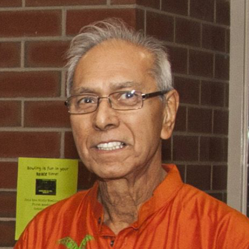
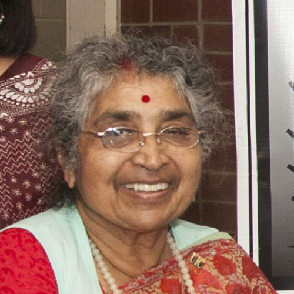
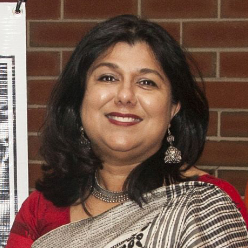
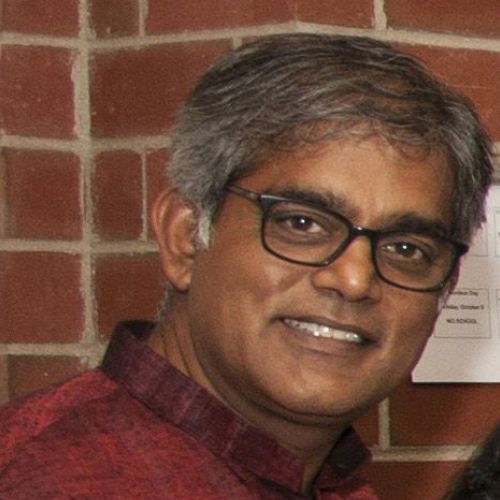
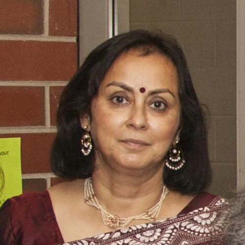
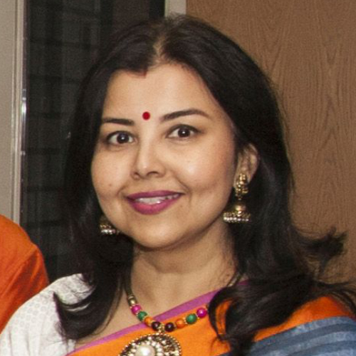
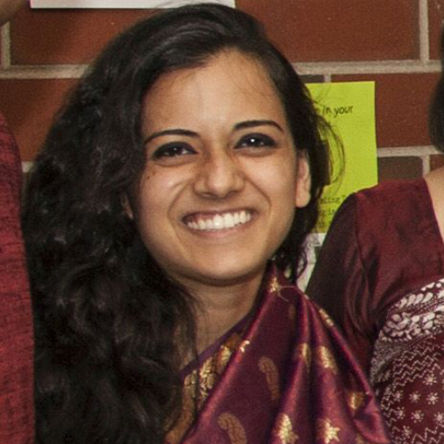

VAROSHA

Founding Director and Chairman
Santi Banerjee is the founding director of Varosha. He is a retired Biochemical Microbiologist who has been interested in philanthropic work throughout his life. After immigrating to Chicago, Santi formed a team of community members and sponsored a soup kitchen once a month for the last 25 years.
Santi Banerjee is the founding director of Varosha. He is a retired Biochemical Microbiologist who has been interested in philanthropic work throughout his life. After immigrating to Chicago, Santi formed a team of community members and sponsored a soup kitchen once a month for the last 25 years.

Founding Director
Krishna Chakrabarty is one of the three founder members of Varosha, along with Santi Banerjee and Subrata Banerjee. She is a biochemist and after retiring from University of Illinois at Chicago, she volunteers as a tutor to medical students.
Krishna Chakrabarty is one of the three founder members of Varosha, along with Santi Banerjee and Subrata Banerjee. She is a biochemist and after retiring from University of Illinois at Chicago, she volunteers as a tutor to medical students.

Director of Finance
Neela Dasgupta is a CPA with experience in public, governmental and nonprofit accounting and reporting. She has over 20 years of experience in small business accounting.
Neela Dasgupta is a CPA with experience in public, governmental and nonprofit accounting and reporting. She has over 20 years of experience in small business accounting.

Director of Project Management
Bikram Dewanjee is a CPA, MBA and successful entrepreneur who brings a wealth of practical experience to help Varosha in the area of Strategic Planning and Project Management.
Bikram Dewanjee is a CPA, MBA and successful entrepreneur who brings a wealth of practical experience to help Varosha in the area of Strategic Planning and Project Management.

Director of Fundraising and Special Projects
Chandrima Roy has over 25 years of experience in regional and local economic development, growth management and sustainability.
Chandrima Roy has over 25 years of experience in regional and local economic development, growth management and sustainability.

Community Outreach and Social Media Coordinator
Shompita Bhattacharyya is an Engineering Quality Manager at Motorola Solutions. Shompita is part of our Public Relations and Community Outreach team.
Shompita Bhattacharyya is an Engineering Quality Manager at Motorola Solutions. Shompita is part of our Public Relations and Community Outreach team.

Health Care Initiatives and Special Projects Coordinator
Shuvani Sanyal is a resident training in Internal Medicine & Pediatrics. Shuvani is initiating health education programs in communities Varosha serves and also part of Community Outreach.
Shuvani Sanyal is a resident training in Internal Medicine & Pediatrics. Shuvani is initiating health education programs in communities Varosha serves and also part of Community Outreach.